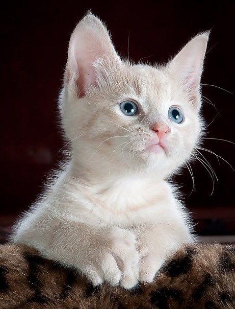

Durham House of Pets
Home
Our Team
Our Products
Our Policies
Contact Us
Durham House of Pets has been in operation for over forty years. During this time we have been privleged to be trusted with your pet supply needs
